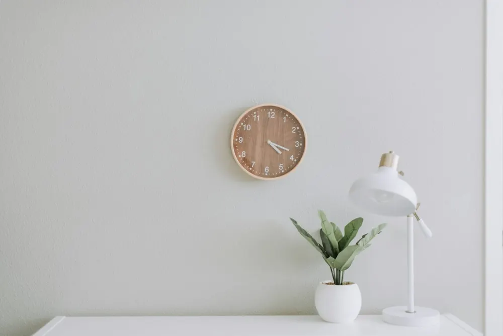
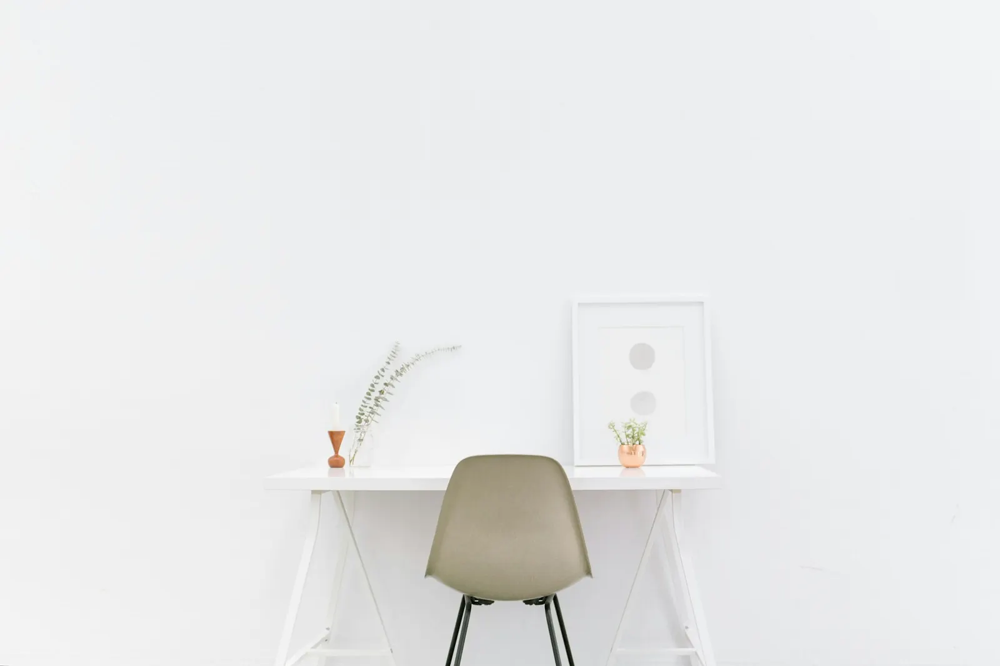

Сначала — ваша идея
Назначение, размеры, любимые референсы. Разбираемся, каким вы видите предмет.

НАТУРАЛЬНОЕ ДЕРЕВО. ВАШ ХАРАКТЕР.
Мебель и предметы из дерева по вашей задумке.
Для дома, в котором всё по-настоящему ваше.
Что создаём
От небольшого предмета до главного
акцента в интерьере. Выберите направление.

МЕБЕЛЬМЕБЕЛЬ
ДЛЯ ИНТЕРЬЕРАВизуальные ориентиры: фотографии интерьеров для вдохновения, не портфолио мастерской.
Живой материал
Рисунок волокон не повторяется. Выберите настроение будущего изделия — от светлого и спокойного до глубокого и выразительного.
Тёплый оттенок, выразительная текстура. Для основательных вещей на каждый день.
От идеи до предмета
Назначение, размеры, любимые референсы. Разбираемся, каким вы видите предмет.
Обсуждаем материал, форму и покрытие. Согласуем эскиз, стоимость и сроки.
Изготовление по согласованному проекту. Финальная отделка и рекомендации по уходу.
Вопросы
Да, это основа подхода. Размеры, высоту и пропорции подбираем под помещение и под то, как вы пользуетесь вещью.
Ориентируйтесь на настроение интерьера: дуб — тёплый и плотный, ясень — светлый и спокойный, орех — глубокий и выразительный. Если сомневаетесь, выберите «Нужен совет мастера» в форме.
Они зависят от размеров, материала и сложности. Опишите идею в форме ниже и передайте текст мастеру: он назовёт цену и сроки после уточнения деталей.
Этого достаточно для начала. Напишите, где будет стоять вещь и что для вас важно, а форму найдём в разговоре.
ДАВАЙТЕ СОЗДАДИМ ЧТО-ТО ВАШЕ
Соберите короткое описание будущего изделия.
Его удобно сохранить и передать мастеру.